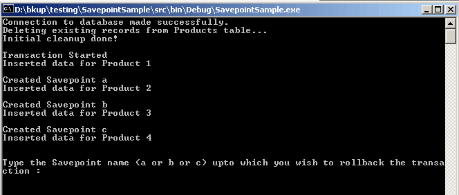
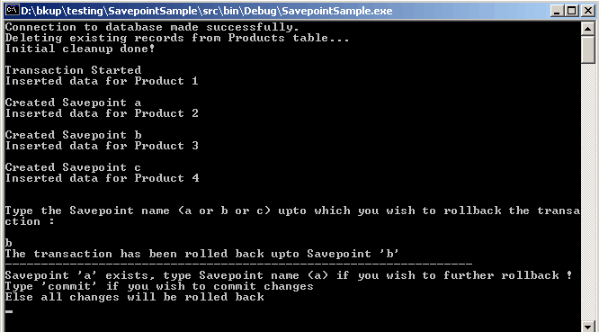

Performing Nested Transactions using
Savepoints in Oracle Data Provider for .NET (ODP.NET)
| The purpose of this sample is to demonstrate how Nested
Transactions can be achieved using Savepoint feature in ODP.NET.
The Savepoint feature provides fine-grained control of
transactions by marking the intermediate points within the transaction.
Once the Savepoint has been set, the transaction can be rolled back to
that Savepoint without affecting the preceding work. Through OracleTransaction class
provided in Oracle.ManagedDataAccess.ClientNamespace
with ODP.NET, the rollback operation to a particular Savepoint can be
done.
|
Using a C# console
application, this sample demonstrates:
- How to create Savepoints in a transaction
- How to rollback upto a particular Savepoint in a
transaction
- How to commit/rollback a transaction
When this sample is run, a database transaction begins. The sample
inserts a row in the Products table before creating any Savepoints. Then
three other rows are inserted in Products table. Before inserting each
of the three rows, a Savepoint is created. The user is displayed the
names of all Savepoint created. The user is given an option to rollback
to a particular Savepoint. The user can provide a Savepoint name that
he wishes to rollback. After rolling back to a particular Savepoint,
the user can further rollback to other Savepoints (if any) or commit
the data or rollback completely.This completes the transaction. Hence
it demonstrates how Nested Transactions are performed using Savepoints
in ODP.NET. |
| 1. When this sample is run, a console
application as shown in Figure 1.1 is displayed. A transaction is
started and data for Product 1 is inserted.The Savepoints "a", "b" and
"c" are created before inserting data for Product 2, Product 3 and
Product 4 respectively.

Figure 1.1
Displays the initial screen
2. The user can input the savepoint name upto which he
wishes to rollback the transaction. For eg. If the user inputs "b"
savepoint then the DML operations upto Savepoint "b" i.e. Insert
operations for Product 3, Product 4 gets rolled back. The message on
console is displayed as shown in Figure 1.2.

Figure 1.2
Displays user the options for rolling back to a savepoint,
commit, rollback completely
3. The user can further commit the changes or rollback
to the remaining savepoint (if any), in the above example the user can
rollback to savepoint "a" or rollback completely.
|
- Visual C# installed with Visual Studio 2005/2008/2010/2012.
- Oracle11g Database or higher running SQL*Net TCP/IP listener
(can be downloaded here)
- Oracle Data Provider for .NET (ODP.NET) (can be downloaded here)
Unzip SavepointSample.zipusing
Winzip or command utility to your convenient directory. Extraction of
the zip file results in the creation of Savepoint directory.
Connect to your database as any user and run the script Savepoint\Setup\DatabaseSetup.sql
at the SQL prompt.
@<Extract_Dir>\Savepoint\Setup\DatabaseSetup.sql
where <Extract_Dir>
is the directory where you have extracted the sample.
The script creates an user "oranet" with password "oranet".
It creates PRODUCTS table. This table is not populated with
any initial data.
1.Ensure that the Database setup has
been completed.
2.Open Savepoint.sln
using Visual Studio .NET from <Extract_Dir>\Savepoint
folder.
3.Edit ConnectionParams.cs
file to change the database connection parameters i.e.TNSName for
database you want to use . Save this file.
4.Ensure that the following .NET Component References have
been added to Savepoint
project:
- System
- System.Data
- Oracle.ManagedDataAccess.
To add the above .NET Components
- Go to Menu ->View-> Solution Explorer.
- Right click on Savepoint
project, choose 'Add Reference'.
- Choose the above .NET Components from the list displayed.
- Click 'Select', then OK.
- The chosen .NET component gets added to the project.
5. Build and run the sample.
| Directory |
File Name |
Description |
| Savepoint\doc |
Readme.html |
This file |
| blaf.css |
This is a cascading style sheet applied to
Readme.html |
| Savepoint\doc\images |
*.gif |
This folder contains images used as
screenshots in the Readme.html file. |
| Savepoint\src\ |
ConnectionParams.cs |
This C# file manages the database
connection used by sample. |
| Savepoint.cs |
This C# file contains source code for all
methods used for creating Savepoints and rollback/commit
operations. |
| Savepoint.csproj |
C# project file |
| Savepoint.csproj.user |
Visual Studio Project User Options (this
file gets automatically generated when a Visual Studio Project is
created) |
| Savepoint.sln |
Visual Studio Solution |
| Savepoint\Setup |
DatabaseSetup.sql |
This is a SQL script file |
|